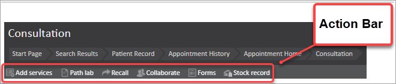
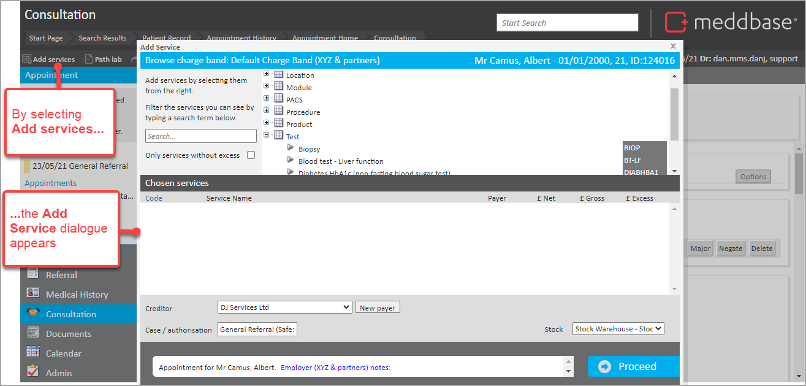
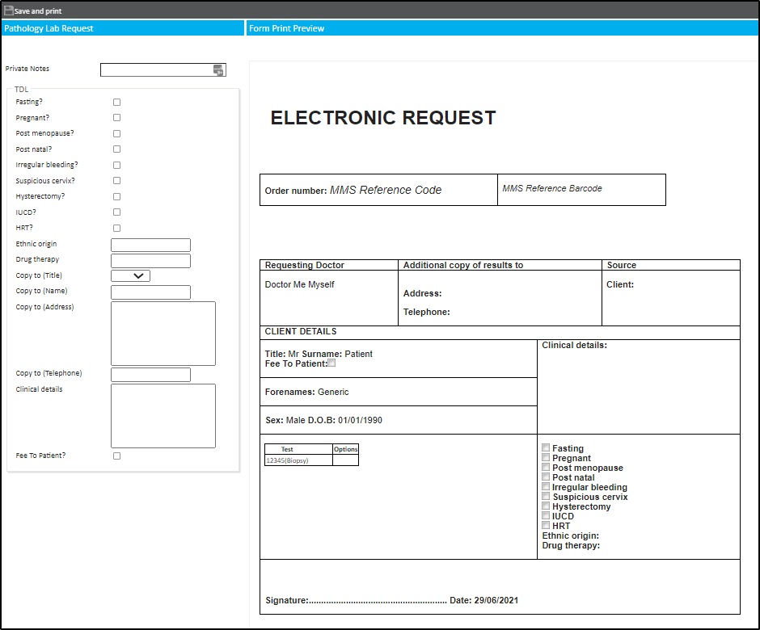
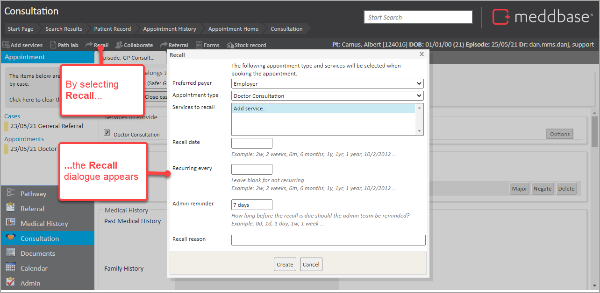
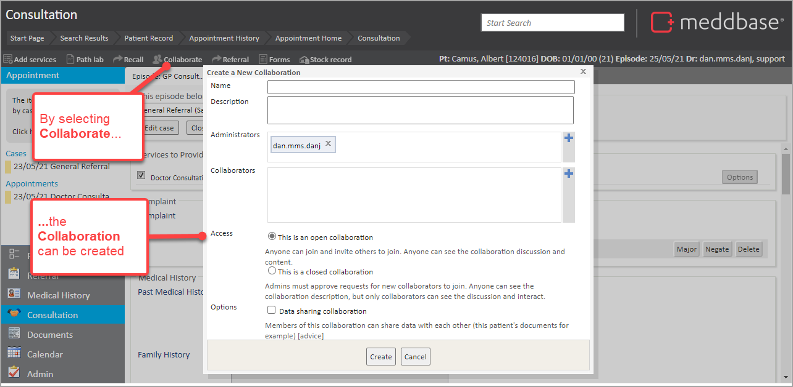
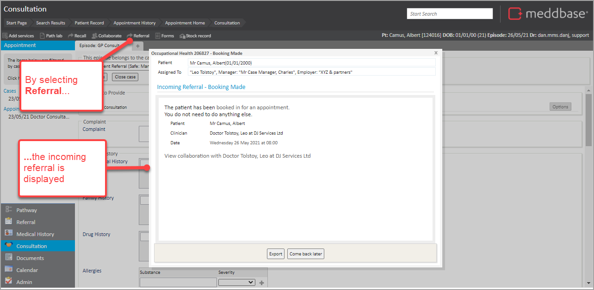
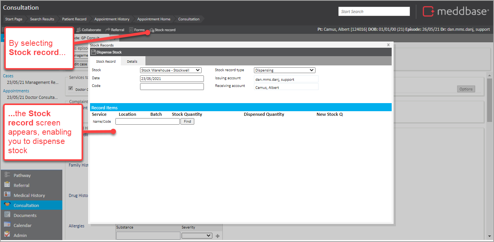
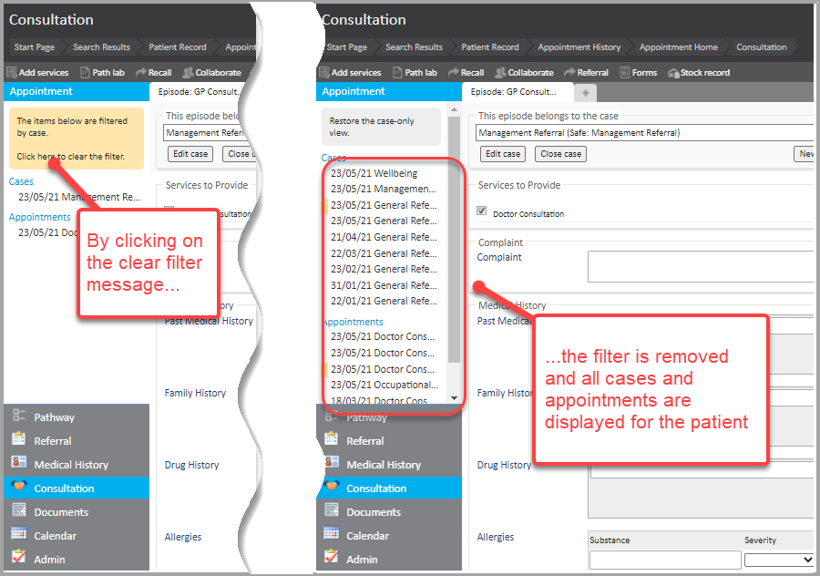
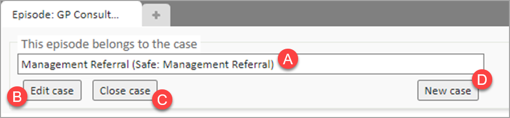
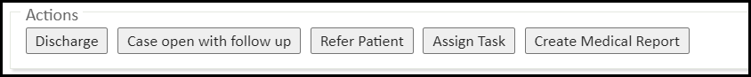

When an appointment has been booked in Meddbase following an OH referral, patient attendance for an appointment triggers a series of steps in Meddbase from patient arrival through to consultation. This enables intuitive and comprehensive management of the process and clinical findings during the patient encounter.
In simple terms, the steps can be summarised in the diagram below.

This article will walk you through the wide range of features and actions available to the medical user in the Consultation view. These are:
This article explains the features available for the Consultation screen, including behaviour of a clinical form.
If you were looking for a simple walkthrough and completing a Clinical Form in a quick way, click here.
This enables you to take a range of different actions.

By clicking Add services, you can add further services to the consultation, according to the patient's (or their preferred payer's) eligibility.

The Add service picker also allows selecting a New Payer and access a different set of services, as per the Preferred Payer's eligibility. This results in an additional invoice for the selected service(s) to be raised where the new preferred payer is the debtor. The original invoice with the original debtor is unaffected.
Having added a Test is added to the consultation which requires a specimen to be sent to a laboratory, by clicking Path lab you can raise a Pathology Lab request. By doing so, Path Lab request print preview opens*.
*The below is an example request form for TDL. The Pathology Request form(s) are generated from templates which are configurable.

This option allows setting up a recall for the appointment and the provided services (these can be altered). By clicking Recall you can set the recall date, recurrence and reason. Furthermore, Administrators can receive a reminder prior to the recall due date.

By clicking Collaborate, you can start a new collaboration. This can be in:-

By clicking Referral, you are presented with the Incoming Referral work item.

By clicking Forms, you are presented with a menu of additional clinical forms available in the chamber. These forms can be added to the Consultation as a new ‘episode’, in addition to the form that is included by default with the appointment. The additional Clinical form will not automatically be assigned to the current case. However, this can be done manually as well.
By clicking Stock record, you can dispense items from stock. Thereby updating current stock levels.

The item dispensed in this manner does not get added to the Services to Provide section of the consultation and will not be added to the invoice for this appointment.
The panel on the left makes available the Case filter. By default, the case for the current episode is presented. By selecting the wording Click here to clear the filter the Cases list is unfiltered so that you can view other cases for this patient.

The Clinical form occupies the centre of the Consultation page. The clinical form is effectively an ‘episode’ for the appointment.
Clinical forms can be custom built and allow the user to capture a specific set of information in a variety of fields incl. free-text fields, drop-down menus, tick/checkboxes, table fields and more. For more information please contact Meddbase Support.
Each Clinical form has a range of components and characteristics that are described in the sub-sections below.
The ‘This episode belongs to the case’ section of the clinical form displays the details of the current case.

and allows the medical user to:-
A. Re-assign the episode
B. Edit the current case including the Title, Safe Title and Diagnosis
C. Close the current case
D. Create a New case for this episode </p class="note">
Episodes and Cases form a relation and amending a Case will affect all related episodes.
The Services to provide section displays the services currently provided in this consultation, incl. the appointment type and allows the medical user to:-
There are a range of field types that are available for all clinical forms. These are:-
There are clinical form behaviours that are important to note. Namely:-
The field outline turns red when the entry is not saved, e.g. when entering a text value into a numerical field.
Some fields may require the user to save manually e.g. as multiple entries are required. In these instances, a save icon will appear next to the field.
There are advanced Clinical form configuration options that enable you to:
Having activated SNOMED CT, when typing data into a field, you will notice a pop-up window with suggestions of words and phrases based on what you are typing. There are 2 types of suggestions you may see:-
When typing into a text field, the clinical form continually submits the text to the SNOMED CT service in an attempt to match what is being typed with SNOMED codes. Any matches that are found will be added as Tentative against the patient. The tentative matches can then be confirmed, negated or deleted. SNOMED codes are taken into account when Prescribing drugs and in Reporting.
*SNOMED CT is a structured clinical vocabulary for use in an electronic health record. It is the most comprehensive and precise clinical health terminology product in the world. The primary purpose of SNOMED CT is to encode the meanings that are used in health information and to support the effective clinical recording of data with the aim of improving patient care.
Having completed the Clinical form, you may have different actions available. The screenshot below explains what they might be :

The Actions section on a Clinical Form can be customised according to requirements. Please contact Meddbase Support for more details.
Changes the status of the appointment to 'Discharged' and triggers the process of creation and sharing of the OH Report.
Please review the Case Management: Overview article for an overview of subsequent steps and links to relevant articles.
Case open with follow up - triggers the process of creating a follow-up referral, changes the status of the appointment to 'Discharged' and triggers the process of creation and sharing of the OH Report.
Triggers the process of creating a referral.
Allows assigning a task to an individual or group; the task will contain back links to this appointment and the patient's record.
Allows creating documents from templates or attaching documents to the patients' record.